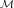
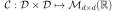
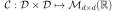
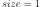

ConditionedGaussianProcess¶
-
class
ConditionedGaussianProcess(*args)¶ Conditioned Gaussian process.
ConditionedGaussianProcess(krigingResult, mesh)Parameters: - krigingResult
KrigingResult Structure that contains all elements of kriging computations.
- mesh
Mesh Mesh  over which the domain
 is discretized.
is discretized.
Notes
ConditionedGaussianProcess helps to create Gaussian random fields,
 where
where  , with covariance function  (
, with covariance function  (  in the stationary case), conditionaly to some observations.Let be the observations of the Gaussian process. We assume the same Gaussian prior as in the
in the stationary case), conditionaly to some observations.Let be the observations of the Gaussian process. We assume the same Gaussian prior as in theKrigingAlgorithm:
with
 a general linear model, a zero-mean Gaussian process with a stationary autocorrelation function :
a general linear model, a zero-mean Gaussian process with a stationary autocorrelation function :The ConditionedGaussianProcess generates realizations of the conditioned process. It focuses first on the
KrigingAlgorithmto build such prior. Results are stored in aKrigingResultstructure, which is given as input argument of the class. This last one, combined with the mesh argument, define both the prior and the covariance evaluation on the mesh vertices conditionnaly to the previous observations. It follows that the realizations are randomly generated from the Gaussian distribution .In practice, we do not store the Gaussian distribution as we need only the random realization method. For that purpose, we use the Cholesky method : we compute the Cholesky factor of the covariance matrix such as . It follows that the random realizations are obtained as following : with
 a centered & reduced random Gaussian realization.
a centered & reduced random Gaussian realization.Examples
>>> import openturns as ot >>> ot.RandomGenerator.SetSeed(0) >>> # Kriging use case >>> # Learning data >>> levels = [8.0, 5.0] >>> box = ot.Box(levels) >>> inputSample = box.generate() >>> # Scale each direction >>> inputSample *= 10 >>> # Define model >>> model = ot.SymbolicFunction(['x', 'y'], ['cos(0.5*x) + sin(y)']) >>> outputSample = model(inputSample) >>> # Definition of exponential model >>> inputDimension = 2 >>> covarianceModel = ot.SquaredExponential([1.988, 0.924], [3.153]) >>> # Basis definition >>> basis = ot.ConstantBasisFactory(inputDimension).build() >>> # Kriring algorithm >>> algo = ot.KrigingAlgorithm(inputSample, outputSample, covarianceModel, basis) >>> algo.run() >>> result = algo.getResult() >>> vertices = [[1.0, 0.0], [2.0, 0.0], [2.0, 1.0], [1.0, 1.0], [1.5, 0.5]] >>> simplices = [[0, 1, 4], [1, 2, 4], [2, 3, 4], [3, 0, 4]] >>> mesh2D = ot.Mesh(vertices, simplices) >>> process = ot.ConditionedGaussianProcess(result, mesh2D)
Attributes: thisownThe membership flag
Methods
getClassName()Accessor to the object’s name. getContinuousRealization()Get a continuous realization. getCovarianceModel()Get the covariance model. getDescription()Get the description of the process. getFuture(*args)Prediction of the  future iterations of the process.
future iterations of the process.getId()Accessor to the object’s id. getInputDimension()Get the dimension of the domain .getMarginal(indices)Get the  marginal of the random process.
marginal of the random process.getMesh()Get the mesh. getName()Accessor to the object’s name. getOutputDimension()Get the dimension of the domain .getRealization()Return a realization of the process. getSample(size)Get  realizations of the process.
realizations of the process.getShadowedId()Accessor to the object’s shadowed id. getTimeGrid()Get the time grid of observation of the process. getTrend()Get the trend function. getVisibility()Accessor to the object’s visibility state. hasName()Test if the object is named. hasVisibleName()Test if the object has a distinguishable name. isComposite()Test whether the process is composite or not. isNormal()Test whether the process is normal or not. isStationary()Test whether the process is stationary or not. isTrendStationary()Tell if the process is trend stationary or not. setDescription(description)Set the description of the process. setMesh(*args)Set the mesh. setName(name)Accessor to the object’s name. setSamplingMethod(*args)Set the used method for getRealization. setShadowedId(id)Accessor to the object’s shadowed id. setTimeGrid(*args)Set the time grid of observation of the process. setVisibility(visible)Accessor to the object’s visibility state. -
__init__(*args)¶ Initialize self. See help(type(self)) for accurate signature.
-
getClassName()¶ Accessor to the object’s name.
Returns: - class_namestr
The object class name (object.__class__.__name__).
-
getContinuousRealization()¶ Get a continuous realization.
Returns: - realization
Function According to the process, the continuous realizations are built:
- either using a dedicated functional model if it exists: e.g. a functional basis process.
- or using an interpolation from a discrete realization of the process on
: in dimension
 , a linear interpolation and in
dimension
, a linear interpolation and in
dimension  , a piecewise constant function (the value at a
given position is equal to the value at the nearest vertex of the mesh of
the process).
, a piecewise constant function (the value at a
given position is equal to the value at the nearest vertex of the mesh of
the process).
- realization
-
getCovarianceModel()¶ Get the covariance model.
Returns: - covarianceModel
CovarianceModel Temporal covariance model
 .
.
- covarianceModel
-
getDescription()¶ Get the description of the process.
Returns: - description
Description Description of the process.
- description
-
getFuture(*args)¶ Prediction of the
future iterations of the process.Parameters: - stepNumberint,

Number of future steps.
- sizeint,
 , optional
, optional Number of futures needed. Default is 1.
Returns: - prediction
ProcessSampleorTimeSeries - future iterations of the process.
If , prediction is a
TimeSeries. Otherwise, it is aProcessSample.
- stepNumberint,
-
getId()¶ Accessor to the object’s id.
Returns: - idint
Internal unique identifier.
-
getInputDimension()¶ Get the dimension of the domain
.Returns: - nint
Dimension of the domain
: .
-
getMarginal(indices)¶ Get the
marginal of the random process.Parameters: - kint or list of ints

Index of the marginal(s) needed.
Returns: - marginals
Process Process defined with marginal(s) of the random process.
- kint or list of ints
-
getName()¶ Accessor to the object’s name.
Returns: - namestr
The name of the object.
-
getOutputDimension()¶ Get the dimension of the domain
.Returns: - dint
Dimension of the domain
.
-
getRealization()¶ Return a realization of the process.
Returns: - realization
Field A realization of the process.
Examples
>>> import openturns as ot >>> ot.RandomGenerator.SetSeed(0) >>> # Kriging use case >>> # Learning data >>> levels = [8.0, 5.0] >>> box = ot.Box(levels) >>> inputSample = box.generate() >>> # Scale each direction >>> inputSample *= 10 >>> # Define model >>> model = ot.SymbolicFunction(['x', 'y'], ['cos(0.5*x) + sin(y)']) >>> outputSample = model(inputSample) >>> # Definition of exponential model >>> inputDimension = 2 >>> covarianceModel = ot.SquaredExponential(inputDimension *[0.95]) >>> # Basis definition >>> basis = ot.ConstantBasisFactory(inputDimension).build() >>> # Kriring algorithm >>> algo = ot.KrigingAlgorithm(inputSample, outputSample, covarianceModel, basis) >>> algo.run() >>> result = algo.getResult() >>> vertices = [[1.0, 0.0], [2.0, 0.0], [2.0, 1.0],[1.0, 1.0], [1.5, 0.5]] >>> simplices = [[0, 1, 4], [1, 2, 4], [2, 3, 4], [3, 0, 4]] >>> mesh2D = ot.Mesh(vertices, simplices) >>> process = ot.ConditionedGaussianProcess(result, mesh2D) >>> # Get a realization of the process >>> realization = process.getRealization()
- realization
-
getSample(size)¶ Get
realizations of the process.Parameters: - nint,

Number of realizations of the process needed.
Returns: - processSample
ProcessSample - realizations of the random process. A process sample is a
collection of fields which share the same mesh
 .
.
- nint,
-
getShadowedId()¶ Accessor to the object’s shadowed id.
Returns: - idint
Internal unique identifier.
-
getTimeGrid()¶ Get the time grid of observation of the process.
Returns: - timeGrid
RegularGrid Time grid of a process when the mesh associated to the process can be interpreted as a
RegularGrid. We check if the vertices of the mesh are scalar and are regularly spaced in but we don’t check if the connectivity of the mesh is conform
to the one of a regular grid (without any hole and composed of ordered
instants).
but we don’t check if the connectivity of the mesh is conform
to the one of a regular grid (without any hole and composed of ordered
instants).
- timeGrid
-
getTrend()¶ Get the trend function.
Returns: - trend
TrendTransform Trend function.
- trend
-
getVisibility()¶ Accessor to the object’s visibility state.
Returns: - visiblebool
Visibility flag.
-
hasName()¶ Test if the object is named.
Returns: - hasNamebool
True if the name is not empty.
-
hasVisibleName()¶ Test if the object has a distinguishable name.
Returns: - hasVisibleNamebool
True if the name is not empty and not the default one.
-
isComposite()¶ Test whether the process is composite or not.
Returns: - isCompositebool
True if the process is composite (built upon a function and a process).
-
isNormal()¶ Test whether the process is normal or not.
Returns: - isNormalbool
True if the process is normal.
Notes
A stochastic process is normal if all its finite dimensional joint distributions are normal, which means that for all
 and
and
 , with
, with  , there is
, there is
 and
and
 such that:
such that:
where
 ,
,
 and
and
 and
and
 is the symmetric matrix:
is the symmetric matrix:
A Gaussian process is entirely defined by its mean function
 and its
covariance function (or correlation function
and its
covariance function (or correlation function  ).
).
-
isStationary()¶ Test whether the process is stationary or not.
Returns: - isStationarybool
True if the process is stationary.
Notes
A process
 is stationary if its distribution is invariant by
translation:
is stationary if its distribution is invariant by
translation:  ,
,
 ,
,
 , we have:
, we have:
-
isTrendStationary()¶ Tell if the process is trend stationary or not.
Returns: - isTrendStationarybool
True if the process is trend stationary.
-
setDescription(description)¶ Set the description of the process.
Parameters: - descriptionsequence of str
Description of the process.
-
setName(name)¶ Accessor to the object’s name.
Parameters: - namestr
The name of the object.
-
setSamplingMethod(*args)¶ Set the used method for getRealization.
Available parameters are :
- 0 : Cholesky factor sampling (default method)
- 1 : H-Matrix method (if H-Mat available)
- 2 : Gibbs method (in dimension 1 only)
Parameters: - samplingMethodint
Fix a method for sampling.
-
setShadowedId(id)¶ Accessor to the object’s shadowed id.
Parameters: - idint
Internal unique identifier.
-
setTimeGrid(*args)¶ Set the time grid of observation of the process.
Returns: - timeGrid
RegularGrid Time grid of observation of the process when the mesh associated to the process can be interpreted as a
RegularGrid. We check if the vertices of the mesh are scalar and are regularly spaced in but we don’t check if the connectivity of the mesh is conform
to the one of a regular grid (without any hole and composed of ordered
instants).
- timeGrid
-
setVisibility(visible)¶ Accessor to the object’s visibility state.
Parameters: - visiblebool
Visibility flag.
-
thisown¶ The membership flag
- krigingResult